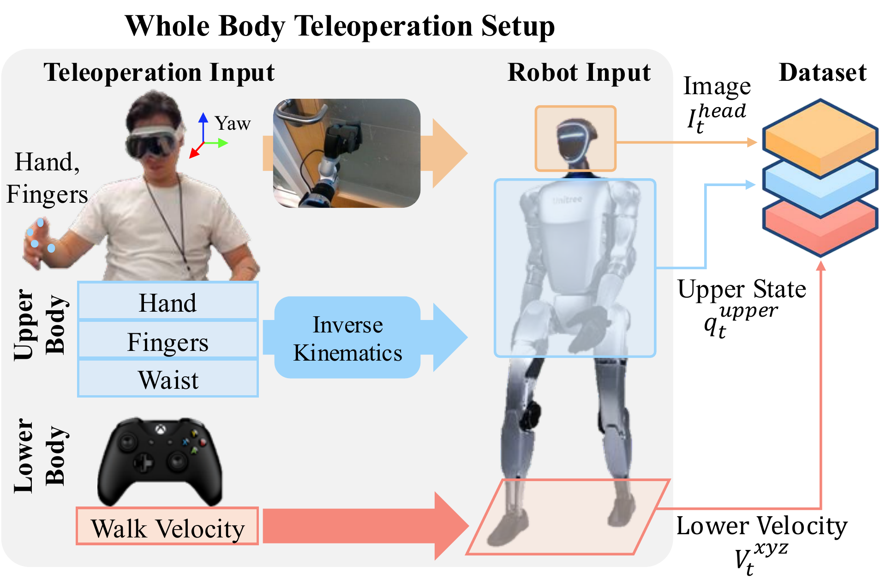
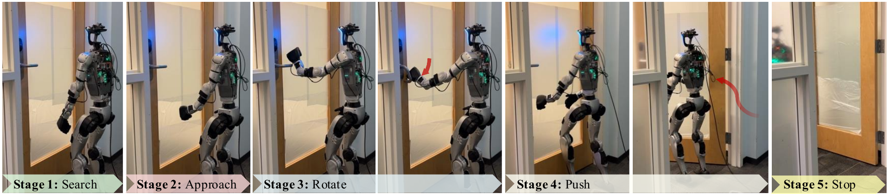

We train StageACT on teleoperated demonstrations collected with a whole-body setup: a Unitree G1 with Dex-3 hands, where an Apple Vision Pro tracks the operator’s hands and retargets them to the robot via inverse kinematics. Locomotion is issued as simple base velocity commands while the operator controls arms and hands, which makes loco-manipulation teleop practical. The resulting dataset has 135 successful demos, gathered by two operators over two days in two offices (>8 hours). Each trajectory logs a 480×640 egocentric RGB image, a 29-D robot state (upper body, both hands,

Overview of whole body teleoperation setup based on the G1 humanoid robot.
To inject temporal context, we annotate five stages (search, approach, rotate, push, stop) offline, combining visual inspection with proprioceptive cues, where sharp torque spikes indicate contact transitions. During training and evaluation, these stage labels are one-hot vectors concatenated with the usual inputs so the policy can disambiguate look-alike observations and avoid mode collapse.

Long-horizon task of door opening categorized into sub-stages.
The learning recipe follows ACT with a small modification for stage input: we optimize a standard imitation reconstruction loss together with a KL regularizer, predict ~3-second action chunks, and temporally smooth them for stable execution. Hyperparameters and procedures mirror ACT, with changes only to accept the stage vector.